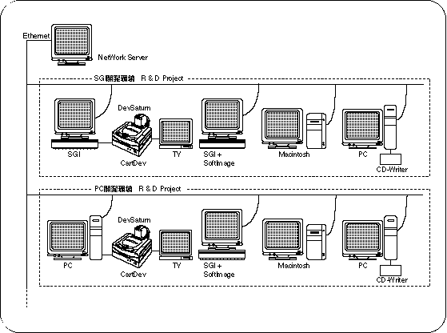

Return to menu | Go to next page

Sega recommends the development environment shown in the figure.
In an integrated environment using a network, it would be desirable to add SGI or PC for programmers, SGI or Macintosh for designers, and Macintosh for sound under a UNIX server.